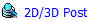
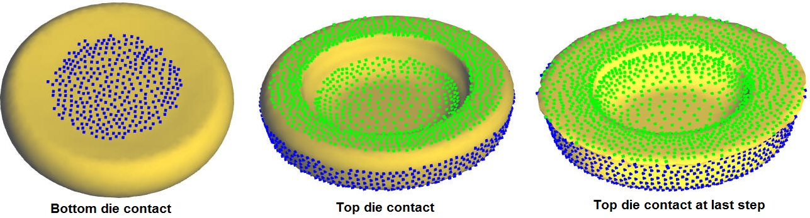
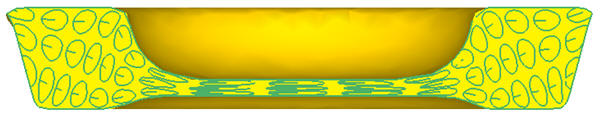
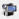
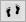

Browse the project Gear_t in DEFORM GUI Main and select DB. Click on

Post Processor link to open it in Next Gen Post.
Play through the steps
Click on Play steps forward and watch the workpiece fill the tooling. Set up a simple view without the mesh and turn on contact . Play through the process one step at a time (use Next and Previous step buttons) and watch the workpiece contact with the top and bottom die. (See Fig. L11.1.)

Workpiece contact with tools as it fill the tooling
FLOWNET can be used to create a pattern on the workpiece at the start of the forging operation and to track the distortion through the simulation. Turn off the field variables and click on the FLOWNET icon to open flownet definition window. Click the  button and choose the Polygon grid pattern. Click
button and choose the Polygon grid pattern. Click  , Define the slicing plane down the center of the workpiece. Click
, Define the slicing plane down the center of the workpiece. Click  and define 4 as the Number of polygons. Click
and define 4 as the Number of polygons. Click  & to generate a default circular pattern, which can be reviewed by stepping through the step list. To watch the pattern deform with the workpiece, turn on the
workpiece and then slice it so that you can see the mesh and flownet as shown in Fig. L11.2.
& to generate a default circular pattern, which can be reviewed by stepping through the step list. To watch the pattern deform with the workpiece, turn on the
workpiece and then slice it so that you can see the mesh and flownet as shown in Fig. L11.2.

Workpiece at last step with polygon grid pattern with sliced plane
Open “Gear_sym.DB” in Next Gen Post as explained for Gear_t.DB. The DEFORM has an enhanced offset flownet that helps to predict folds. Go to the post, slice the object and watch the fold form. Go to the last step, right click on the folding icon in the tree and select Show folding. This will show you areas where the workpiece folded over and made contact with itself. DEFORM removes these regions to help with convergence.
Use the Offset flownet used for finding folds. It can detect a folding tendency that is not shown in the mesh. Go to the last step and view the flownet. You can see that the fold remains even though the fold has been removed from the workpiece mesh.
Optional exercise – time permitting– PIP (Picture in picture) / Animation
- On the toolbar, go to File/Import DB (PIP) and import the same DB. You now have two pictures in graphics window that you can manipulate. Rotate, pan and zoom in on the workpiece in the top viewport. Plot strain and play through the simulation.
- Create a load-stroke graph in the one picture. Play through the simulation.
- On the toolbar,click on

(Animation Setup). View the settings below and click Save. Play the animation file.General tab: File name is the name of the animation. The animation files will be saved in a DEF_ANIM folder in the current simulation directory (by default).
Settings tab: adjusts the time stepping between frames and at the beginning and end of the animation
Export tab: Select WMV file to create a WMV format animation that can be played on almost any computer.
Optional exercise – time permitting – Purge
- Open the steplist

. The steps that are highlighted in blue are selected. The highlighted steps are what you see when you play through the simulation. You can click any step or click and drag several steps to select/de-select one or more steps. There are also tools on the right to help you select the desired steps.
- Click on None then enter 50 into the Increment field and press the Enter key. Click on the Remeshing button.
- Go to Database Purging then click Save Selected Steps. This will create a new database called Gear_sym_PUR.DB. The new database will only contain the steps that you selected. Any unselected step will be removed (purged). The result is a database that is smaller and easy to archive.